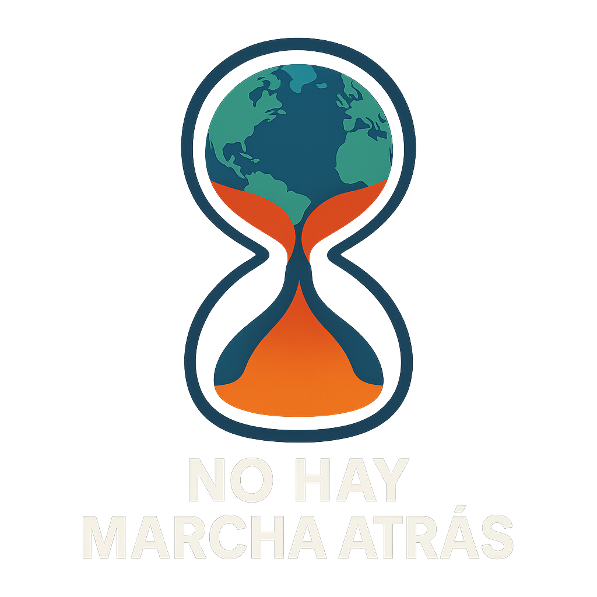

No hay marcha atrás
Una base de conocimiento para comprender el cambio climático, consultar sus fuentes y explorar formas de actuar. Elige una pregunta para empezar.
Ver NovedadesCómo consultar esta base
Cada tema reúne una explicación y enlaces a la evidencia. Al leer un dato, comprueba su periodo, ámbito y fuente; la fecha de una noticia no indica cuándo se ha revisado una ficha.
Novedades con contexto conecta noticias y documentos con los temas de fondo.